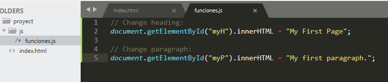

¿Que es javascript?
JavaScript es el lenguaje de programación más popular del mundo.
JavaScript es el lenguaje de programación de la Web.
JavaScript es fácil de aprender.
Este tutorial le enseñará JavaScript básico.

¿Por qué estudiar JavaScript?
JavaScript es uno de los 3 lenguajes que todos los desarrolladores web deben aprender:
- HTML para definir el contenido de las páginas web
- CSS para especificar el diseño de las páginas web
- JavaScript para programar el comportamiento de las páginas web
Como agregar javascript en el documento html
Existen dos formas diferentes de agregar javascript
- Desde un archivo diferente
Esta es la mejor opcion si queremos tener un codigo mas legible ,Sobre todo porque algunos scripts de JS deben utilizarse en varias páginas, por lo tanto, es mejor mantener el código JavaScript en archivos separados.Es por esto que la forma más aceptable de incluir JavaScript en HTML es importando archivos externos. Se puede hacer referencia a estos archivos desde adentro de los documentos HTML.al igual que hacemos referencia a los documentos CSS. Algunos de los beneficios de agregar código JS en archivos separados son:
- Cuando los códigos HTML y JavaScript están separados, se cumple el principio de diseño de separación y hace que todo sea mucho más sostenible y reutilizable.
- La legibilidad y el mantenimiento del código es mucho más fácil.
- Los archivos JavaScript en caché mejoran el rendimiento general del sitio web al disminuir el tiempo que tardan las páginas en cargarse.
Para el ejemplo vemos agregamos en la linea 9 la etiqueta para hacer uso de un archivo llamado funciones.js que se encuentra dentro de una carpeta llamada js dentro de nuestro proyecto

- La otra forma es agregar javascript directamente al archivo html
forma de insertar JavaScript en HTML es directa. Puedes hacerlo utilizando la etiqueta < script > </script > que debe envolver todo el código JS que escribas. Se puede agregar el código JS, tanto en las etiquetas < head > o tambien al final del < body > se recomienda siempre que este al final del body para que la pagina cargue mas rapido y luego ejeucte el codigo javascript.
Declaracion de variable
Las declaraciones de JavaScript a menudo comienzan con una palabra clave para identificar la acción de JavaScript que se debe realizar.
| # | Palabra clave | descripción |
|---|---|---|
| 1 | var | Declara una variable |
| 2 | let | Declara una variable de bloque |
| 3 | const | Declara una constante de bloque |
| 4 | if | Marca un bloque de declaraciones que se ejecutarán con una condición. |
| 5 | switch | Marca un bloque de sentencias que se ejecutarán en diferentes casos. |
| 6 | for | Marca un bloque de sentencias que se ejecutarán en un bucle. |
| 7 | function | Declara una función |
| 8 | return | Sale de una función |
| 9 | try | Implementa el manejo de errores en un bloque de declaraciones. |
Comentarios
Los comentarios de JavaScript se pueden utilizar para explicar el código JavaScript y hacerlo más legible. Los comentarios de JavaScript también se pueden utilizar para evitar la ejecución, al probar código alternativo
Comentarios de una sola línea
Los comentarios de una sola línea comienzan con //. Cualquier texto entre //y el final de la línea será ignorado por JavaScript (no se ejecutará). Este ejemplo utiliza un comentario de una sola línea antes de cada línea de código:
Comentarios de varias líneas
Los comentarios de varias líneas comienzan con /*y terminan con */. JavaScript ignorará cualquier texto entre /*y */. Este ejemplo utiliza un comentario de varias líneas (un bloque de comentarios) para explicar el código: